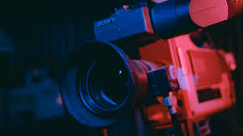
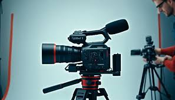
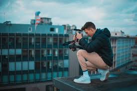
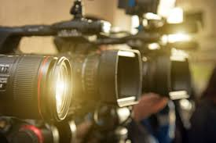
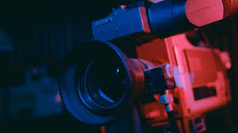
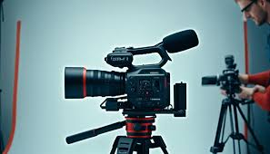
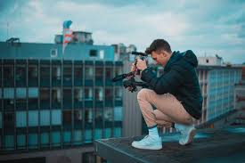
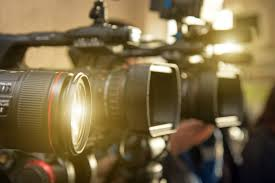

**Videography: A World of Infinite Possibilities**
Heading 2
Heading 2
Heading 2
Heading 2
Heading 2
I LOVE PHOTOGRAPHY
Videography is an art form that has continuously evolved, offering an array of avenues for creative expression,
professional development, and technological exploration. As a medium that combines visual imagery, motion, and
sound, videography allows for an unparalleled range of possibilities in storytelling, marketing, entertainment,
education, and personal expression. With the increasing accessibility of high-quality cameras and editing software,
videography has democratized content creation, allowing both amateurs and professionals to contribute to a vast and
ever-expanding landscape. The diversity of fields that videography touches highlights its importance and versatility
in modern culture and communication.

One of the primary avenues in videography is the entertainment industry, where it plays a pivotal role in film, television, and online content creation. In the film industry, videographers are tasked with capturing and shaping narratives that entertain, inform, and move audiences. From independent films to blockbuster franchises, videography involves a complex interplay of techniques such as lighting, camera angles, and editing to convey the director’s vision. In television, videographers contribute to the production of news programs, reality shows, documentaries, and scripted series. Additionally, with the rise of streaming platforms, the demand for high-quality video content has increased exponentially, creating new opportunities for videographers to explore niche genres or experiment with unconventional formats.

Another significant avenue for videography is the commercial and marketing sector. In an era where digital advertising dominates, businesses use video to reach and engage consumers in ways that static images or text cannot. Commercial videography ranges from short social media ads to long-form brand documentaries, product demonstrations, and explainer videos. High-quality videography can make a brand stand out in a crowded marketplace, and the ability to capture attention quickly has never been more essential. Corporate videographers are also involved in producing internal communications, training materials, and promotional videos that help organizations communicate with their employees, clients, and customers effectively.

Beyond entertainment and marketing, videography is increasingly important in education. The rise of online learning platforms and educational content on YouTube and other digital spaces has highlighted how powerful video can be as an instructional tool. Educators use video to create tutorials, demonstrations, and lectures that facilitate deeper learning experiences. For example, science experiments or historical events can be better understood through video than by reading about them in textbooks. Educational videographers also work with schools and universities to produce content that helps students learn in more engaging and dynamic ways, often incorporating animation and visual effects to illustrate complex concepts.

In the world of social media, videography plays a central role in the creation of viral content and personal branding. Platforms like YouTube, TikTok, Instagram, and Snapchat have transformed how individuals produce and share video content, often without the need for professional equipment or technical knowledge. Content creators—ranging from influencers to hobbyists—use video to showcase their lifestyles, talents, and opinions, creating communities of followers and subscribers. The shift toward short-form video content on platforms like TikTok has also redefined the art of storytelling, encouraging creativity and innovation in how messages are conveyed within just a few seconds of footage. Social media videographers have found a niche that allows them to exercise both their technical skills and creativity, often under the pressure of tight deadlines and high expectations.

Documentary filmmaking represents another influential avenue in videography. The ability to capture real-life stories and present them in an emotionally compelling way has long been a hallmark of the documentary genre. Documentaries can range from investigative journalism to biographical films to explorations of societal issues. Videographers in this field must master the art of capturing authenticity, often working in challenging environments with limited resources. Documentary filmmakers often engage in extensive research, fieldwork, and interviews to create narratives that are not only visually compelling but also intellectually stimulating. As documentary filmmaking grows in popularity through streaming services like Netflix, the demand for skilled videographers in this field has soared, offering unique career opportunities.
Finally, the technological advancements in videography have opened up entirely new realms of possibility. With the advent of drones, 360-degree cameras, and virtual reality, videographers now have the ability to capture scenes and perspectives that were once impossible or prohibitively expensive. Aerial videography, for instance, has revolutionized everything from real estate marketing to sports broadcasting, while virtual reality (VR) videography offers immersive experiences that transport audiences to entirely new worlds. As technology continues to improve, videographers are constantly pushing the boundaries of what is possible, exploring new techniques in post-production, lighting, and sound to create richer, more engaging video content.
In conclusion, videography offers a vast array of opportunities for creative exploration and professional development. Whether in entertainment, education, marketing, social media, or documentary filmmaking, videography allows individuals to engage with audiences in innovative and powerful ways. As technology continues to advance and new platforms emerge, videographers will have even more avenues to explore and master, ensuring that the field remains dynamic and ever-changing. The versatility and accessibility of videography make it one of the most exciting and essential forms of communication in the modern world, offering endless possibilities for those willing to push the boundaries of the medium.
Scroll to Top

One of the primary avenues in videography is the entertainment industry, where it plays a pivotal role in film, television, and online content creation. In the film industry, videographers are tasked with capturing and shaping narratives that entertain, inform, and move audiences. From independent films to blockbuster franchises, videography involves a complex interplay of techniques such as lighting, camera angles, and editing to convey the director’s vision. In television, videographers contribute to the production of news programs, reality shows, documentaries, and scripted series. Additionally, with the rise of streaming platforms, the demand for high-quality video content has increased exponentially, creating new opportunities for videographers to explore niche genres or experiment with unconventional formats.

Another significant avenue for videography is the commercial and marketing sector. In an era where digital advertising dominates, businesses use video to reach and engage consumers in ways that static images or text cannot. Commercial videography ranges from short social media ads to long-form brand documentaries, product demonstrations, and explainer videos. High-quality videography can make a brand stand out in a crowded marketplace, and the ability to capture attention quickly has never been more essential. Corporate videographers are also involved in producing internal communications, training materials, and promotional videos that help organizations communicate with their employees, clients, and customers effectively.

Beyond entertainment and marketing, videography is increasingly important in education. The rise of online learning platforms and educational content on YouTube and other digital spaces has highlighted how powerful video can be as an instructional tool. Educators use video to create tutorials, demonstrations, and lectures that facilitate deeper learning experiences. For example, science experiments or historical events can be better understood through video than by reading about them in textbooks. Educational videographers also work with schools and universities to produce content that helps students learn in more engaging and dynamic ways, often incorporating animation and visual effects to illustrate complex concepts.

In the world of social media, videography plays a central role in the creation of viral content and personal branding. Platforms like YouTube, TikTok, Instagram, and Snapchat have transformed how individuals produce and share video content, often without the need for professional equipment or technical knowledge. Content creators—ranging from influencers to hobbyists—use video to showcase their lifestyles, talents, and opinions, creating communities of followers and subscribers. The shift toward short-form video content on platforms like TikTok has also redefined the art of storytelling, encouraging creativity and innovation in how messages are conveyed within just a few seconds of footage. Social media videographers have found a niche that allows them to exercise both their technical skills and creativity, often under the pressure of tight deadlines and high expectations.
Documentary filmmaking represents another influential avenue in videography. The ability to capture real-life stories and present them in an emotionally compelling way has long been a hallmark of the documentary genre. Documentaries can range from investigative journalism to biographical films to explorations of societal issues. Videographers in this field must master the art of capturing authenticity, often working in challenging environments with limited resources. Documentary filmmakers often engage in extensive research, fieldwork, and interviews to create narratives that are not only visually compelling but also intellectually stimulating. As documentary filmmaking grows in popularity through streaming services like Netflix, the demand for skilled videographers in this field has soared, offering unique career opportunities.
- Documentary
- Social Media
- Product
Finally, the technological advancements in videography have opened up entirely new realms of possibility. With the advent of drones, 360-degree cameras, and virtual reality, videographers now have the ability to capture scenes and perspectives that were once impossible or prohibitively expensive. Aerial videography, for instance, has revolutionized everything from real estate marketing to sports broadcasting, while virtual reality (VR) videography offers immersive experiences that transport audiences to entirely new worlds. As technology continues to improve, videographers are constantly pushing the boundaries of what is possible, exploring new techniques in post-production, lighting, and sound to create richer, more engaging video content.
- Documentary
- Social Media
- Content
- advertisement
- Influencing
- Product
In conclusion, videography offers a vast array of opportunities for creative exploration and professional development. Whether in entertainment, education, marketing, social media, or documentary filmmaking, videography allows individuals to engage with audiences in innovative and powerful ways. As technology continues to advance and new platforms emerge, videographers will have even more avenues to explore and master, ensuring that the field remains dynamic and ever-changing. The versatility and accessibility of videography make it one of the most exciting and essential forms of communication in the modern world, offering endless possibilities for those willing to push the boundaries of the medium.
Scroll to Top